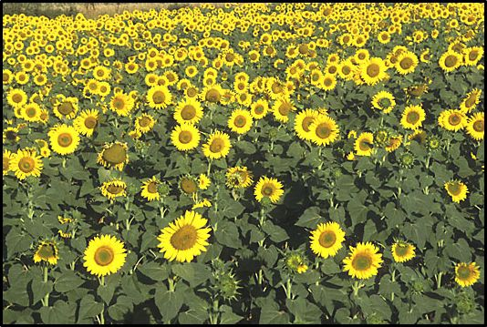
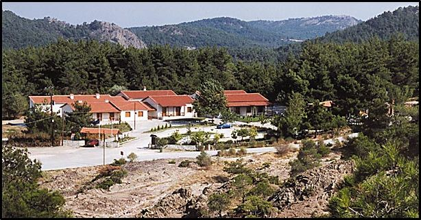
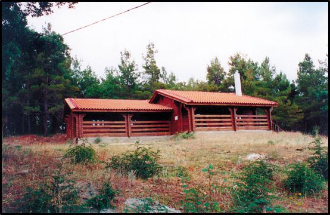

Στην περιοχή ασκούνται γεωργικές δραστηριότητες, κτηνοτροφία, δασικές εργασίες. Στη Δαδιά οι περισσότεροι κάτοικοι ασχολούνται με τις δασικές εργασίες και την κτηνοτροφία, ενώ η καλλιέργεια των χωραφιών αποτελεί συμπληρωματική ασχολία.
Στη γεωργία κυριαρχεί η μικρή ιδιοκτησία η οποία ως προς τη χρήση αυξάνεται με διάφορες ενοικιαζόμενες εκτάσεις, συνήθως, όμως, κατά άτυπο τρόπο, που παρεμποδίζει πολυετείς καλλιέργειες και σημαντικές βελτιώσεις των εδαφών.
Οι περισσότερες κτηνοτροφικές μονάδες συγκεντρώνονται στον Προβατώνα και στη Δαδιά. Κυριαρχούν γενικά τα μικρά ζώα (αιγοπρόβατα) που εκτρέφονται κατά παραδοσιακό τρόπο, είτε σταβλισμένα, είτε ελεύθερης βοσκής. Τα τελευταία κινούνται σε ζώνες χαμηλού υψομέτρου σε μικρή απόσταση από τους οικισμούς. Δεν υπάρχουν αμιγείς κτηνοτροφικές εκμεταλλεύσεις. Ολοι οι κτηνοτρόφοι είναι ταυτόχρονα και γεωργοί ή διατηρούν επιτηδεύματα του δευτερογενή ή του τριτογενή τομέα. Το σύστημα εκτροφής είναι κοινό σε όλη την περιοχή μελέτης και αποτελείται από ένα συνδυασμό σταυλισμένων κοπαδιών και κοπαδιών ελεύθερης βοσκής.
Στην περιοχή η εκμετάλλευση των δασών μέχρι το έτος 1963 γινόταν χωρίς να υπάρχει ουσιαστικά ένα σχέδιο για μια συστηματική διαχείριση. Εφαρμόζονταν μόνο κάποιες ρυθμίσεις για την καυσοξύλευση, που αποσκοπούσαν στην κάλυψη ατομικών αναγκών των περιοίκων. Υλοτομίες για τεχνική ξυλεία γινόταν σε περιορισμένη κλίμακα, για την κάλυψη κυρίως ατομικών αναγκών και λιγότερο μικροεπαγγελματικών αναγκών. Από το 1969, με την εφαρμογή στην περιοχή της Κρατικής Εκμετάλλευσης Δασών (ΚΕΔ), άρχισε η συστηματική διαχείριση του δασικού συμπλέγματος Δαδιάς-Λευκίμμης-Σουφλίου. Μέχρι σήμερα συντάχθηκαν 3 διαχειριστικές μελέτες, η πρώτη για την περίοδο 1969-1978, η δεύτερη για την περίοδο 1982-1991 και η τρίτη για την περίοδο 1992-2001.
Η δασική εργασία συνίσταται σε απασχόληση κύρια δασεργατών που είναι οργανωμένοι σε δασικούς συνεταιρισμούς, μέσω της ανάθεσης κατ' αποκοπή εργασίας. Υπάρχουν 11 δασικοί συνεταιρισμοί στην περιοχή, με συνολικό δασεργατικό δυναμικό 397 ενεργά μέλη. Το μεγαλύτερο μέρος του δυναμικού αυτού είναι μέσης ηλικίας (30-50 ετών), αν και ένα σημαντικό ποσοστό (15-25%) κατανέμεται σε ηλικίες άνω των 50 ετών που σταδιακά αποσύρονται από το δασεργατικό επάγγελμα λόγω συνταξιοδότησης. Η προσέλευση στο επάγγελμα είναι μικρή τα τελευταία χρόνια, όπως προκύπτει από το χαμηλό συνολικό ποσοστό των νέων δασεργατών (κάτω από 20%).
Από πλευρά τουριστικών υποδομών, στη Δαδιά υπάρχει το Οικοτουριστικό Κέντρο Επισκεπτών Δαδιάς, όπου λειτουργεί ξενώνας 21 δωματίων, αναψυκτήριο και Κέντρο Ενημέρωσης για το βιότοπο. Στο Κέντρο Ενημέρωσης, ειδικευμένοι ξεναγοί, ενημερώνουν τους επισκέπτες για την αξία της περιοχής και παρουσιάζουν σειρά διαφανειών και βιντεοταινιών. Από το Οικοτουριστικό Κέντρο, οι επισκέπτες με ειδικό μικρό λεωφορείο, επισκέπτονται το κλειστό παρατηρητήριο αρπακτικών σε τρία χιλιόμετρα από το Κέντρο. Εδώ οι επισκέπτες μπορούν διακριτικά να παρακολουθήσουν τα αρπακτικά και κυρίως γύπες, αφού ακριβώς απέναντι υπάρχει ταΐστρα για τους γύπες.
Σε απόσταση 15 περίπου χλμ από τη Δαδιά υπάρχει ο χώρος δασικής αναψυχής Κατραντζίδων, στο οποίο λειτουργεί αναψυκτήριο και καφενείο υπό την διαχείριση του Γυναικείου Συνεταιρισμού Δαδιάς. Γύρω από το αναψυκτήριο έχει διαρρυθμιστεί εκτεταμένος χώρος αναψυχής από το Δασαρχείο Σουφλίου, το οποίο έχει και τη διαχείριση, φύλαξη και συντήρηση όλων των εγκαταστάσεων.
Παράλληλα τόσο στο χωριό Λευκίμη, όσο και στο Τυχερό έχουν δημιουργηθεί οικοτουριστικές υποδομές με την κατασκευή παραδοσιακών ξενώνων για τη φιλοξενία των επισκεπτών της περιοχής.
